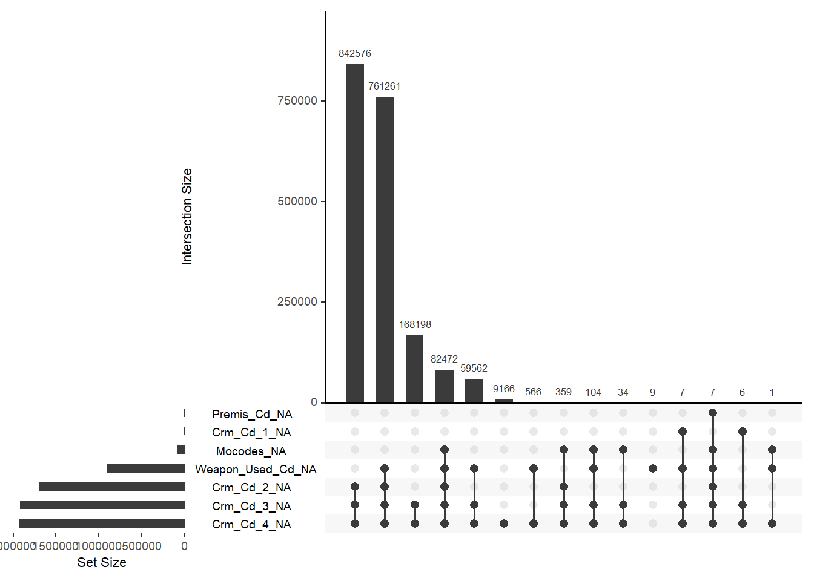
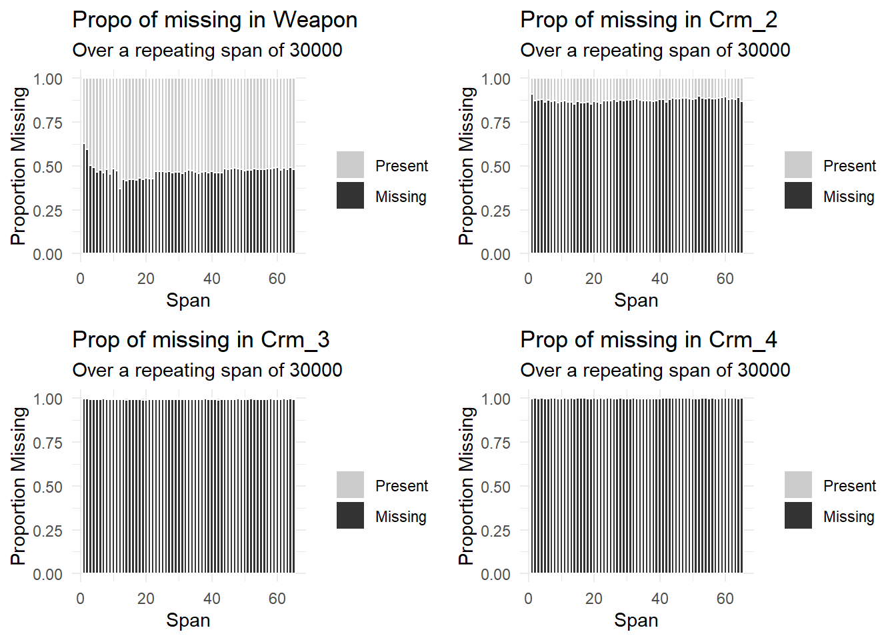

Chapter 3 Data
3.1 Sources
Crime Data from 2020 to Present
[Los Angeles Open Data](https://data.lacity.org/Public-Safety/Crime-Data-from-2020-to-Present/2nrs-mtv8))](https://clio.columbia.edu/)))
The data was collected by the Los Angeles Police Department, LAPD. It reflects incidents of crime since 2020. The data inside is transcribed from the official crime report, and is typed from the paper, which means that there might be typos and inaccuracies.
- Collected by Los Angeles Police Department, LAPD
- Owner: LAPD OpenData
- Date created: February 10, 2020
- Last Updated: November 2, 2022
Data Format:
- CSV file
- 595K rows and 28 columns
- Three types of data: Plain text, Number, date
- Update Frequency: weekly
- Columns: Date occurring, area, criminal code, victim age, victim sex, weapon description, status, location, etc.
- Each row is a crime incident
Issues:
Some columns like crime codes are extremely sparse, containing lots of missing values
We need to spend tons of time on data cleaning. There are many categorical columns, which require some string transformation. And some other columns carry geographical information, so we should merge these columns to extract an exact location.
For some text columns, the data inside are mostly abbreviations or codes, which cannot be directly used. In this case, we need to do some research and replace these codes with suitable formats that can be understood easily.
Since there are about 600k datapoints, it is possible that two datapoints will overlap with each other. In this case, we may try convert it into log scale, or sample certain amount of datapoints, instead of using all of them.
Plan to import:
Download the csv file from the website
Preprocess data for convenience :
Replace columns containing spaces such as “DATE OCC” to “DATA_OCC”
Remove character “-”
We plan to import the csv data into MySQL database deployed on the server and visit these data through
odbcpackage, so that it might be easier to collaborate on data.
Contact data owner:
On the dataset webpage(Link is attached on the top of the file), click the “Contact Dataset Owner” button to ask a question, make a comment, or point out something about the data.
3.3 Missing value analysis
In our dataset, there actually contain lots of missing values, and they mostly concentrate on a few specific columns. Hence, in this section, we will visualize these missing values.

From the graph above, we can observe the missing patterns in this dataset. To be specific, there are about 10 kinds of missing patterns in total. The missing values are mostly concentrated on four columns: Weapon_used,Crm_cd_2,Crm_cd_3, and Crm_cd_4. The most common missing pattern is that these four columns are all missed. The occurrences of this pattern exceed more than half of the dataset. The second most common missing pattern is that the crime codes 2,3,4 are all missing, which consists 1/3 of the dataset. Furthermore, by taking a closer look at the missing patterns, we can see that the “crm_cd_4” nearly appears in all the patterns, which means that it may have the highest number of missing values.

From the previous graph, we conclude that the missing value are mostly concentrated on these four columns. Thus, this graph displays the proportion of missing values in these four columns. Specifically, we can see that the values in columns Crm_cd_3 and Crm_cd_4 are completely missed. For weapon_used, it has about 60% of missing values, while Crm_cd_2 has 95% of missing data.